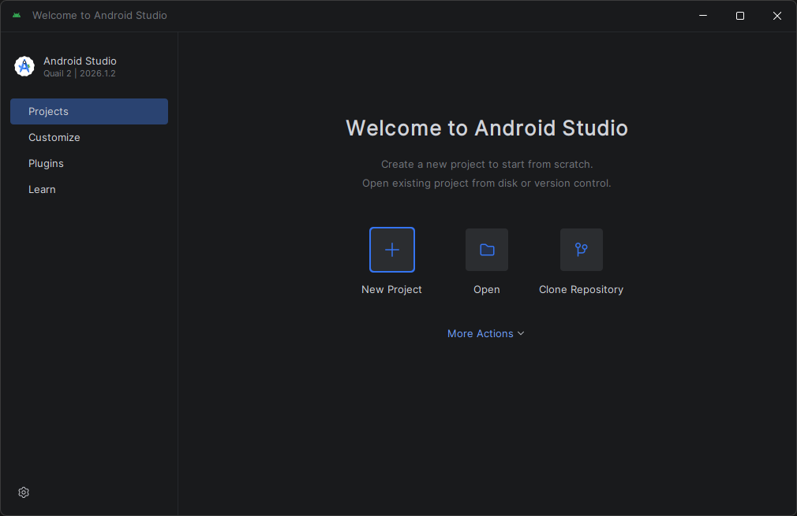
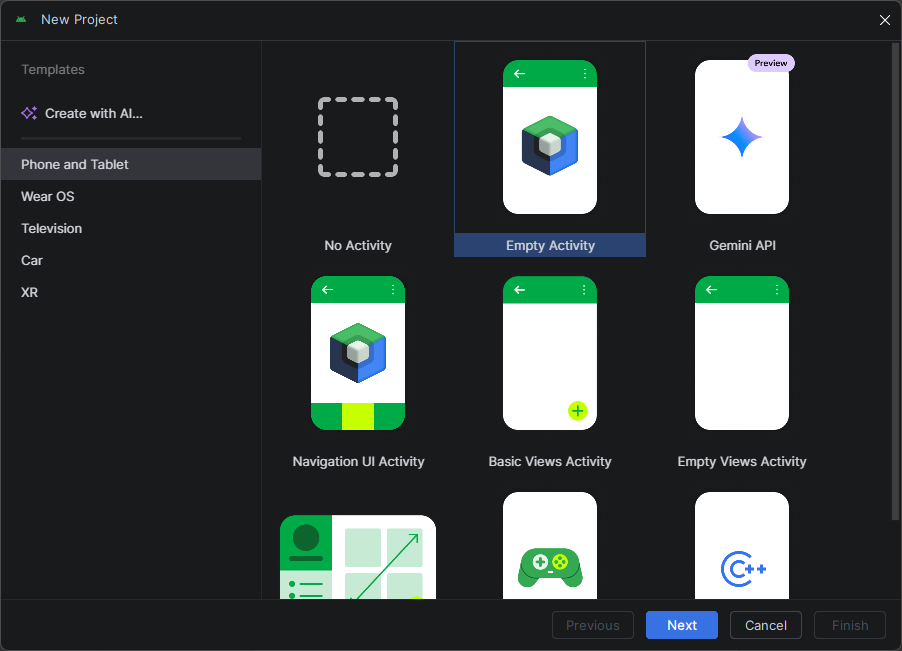
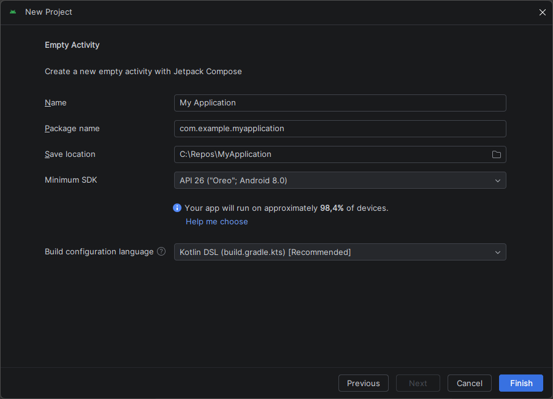
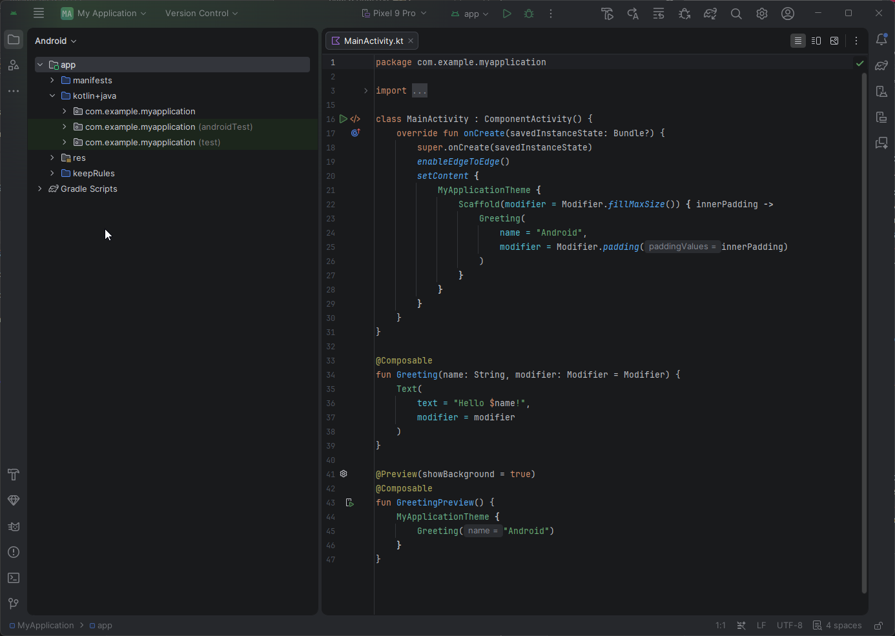

Capítulo 25: Android Studio y anatomía de un proyecto Android¶
Introducción¶
¡Llegó el gran momento! Con toda la base de Kotlin dominada, en esta parte del curso empezamos a construir aplicaciones Android de verdad. Pero un proyecto Android es bastante más que un archivo .kt con una función main: tiene una estructura propia, herramientas de construcción y archivos de configuración que conviene entender antes de escribir código.
En este capítulo instalarás Android Studio, crearás tu primer proyecto y recorrerás su anatomía: qué archivos lo componen, para qué sirve cada uno y cómo encajan entre sí. No escribiremos aún la interfaz (eso empieza en el próximo capítulo); el objetivo aquí es que sepas orientarte dentro de un proyecto Android.
Android Studio, el IDE oficial de Android¶
En el primer capítulo usaste IntelliJ IDEA para aprender Kotlin, y mencionamos que Android Studio llegaría más adelante. Ese momento es ahora.
Android Studio es el entorno de desarrollo (IDE) oficial para Android, creado por Google y construido sobre IntelliJ IDEA. Por eso te resultará familiar: el editor, el autocompletado y la navegación funcionan igual que ya conoces. La diferencia es que Android Studio incluye, además, todo lo necesario para el desarrollo móvil: el SDK de Android (las bibliotecas del sistema), un emulador para probar apps sin un teléfono físico, y las herramientas de compilación.
Instalar Android Studio¶
Instalar Android Studio es sencillo:
- Descarga el instalador desde el sitio oficial: developer.android.com/studio.
- Ejecuta el instalador y sigue el asistente.
- La primera vez que lo abras, un asistente de configuración descargará automáticamente el SDK de Android y los componentes necesarios. Esto puede tardar, según tu conexión.
Cuando el asistente termine, verás la pantalla de bienvenida de Android Studio, lista para crear un proyecto.
Crear tu primer proyecto¶
Desde la pantalla de bienvenida de Android Studio, haz clic en New Project.

Android Studio te mostrará una lista de plantillas (proyectos de ejemplo que sirven de punto de partida). En la pestaña Phone and Tablet, selecciona Empty Activity: crea un proyecto sencillo, de una sola pantalla, ya preparado para usar Jetpack Compose (el sistema moderno de interfaces que usaremos en todo el curso). Luego pulsa Next.

En la siguiente pantalla configuras el proyecto:
- Name: el nombre de tu app (por ejemplo,
MiPrimeraApp). - Package name: un identificador único, normalmente en forma de dominio invertido (por ejemplo,
com.ejemplo.miprimeraapp). - Minimum SDK: la versión mínima de Android que soportará tu app; la API 24 o superior es una elección razonable hoy en día (Android Studio te indica qué porcentaje de dispositivos cubre).
- Build configuration language: déjalo en Kotlin DSL (
build.gradle.kts), la opción recomendada.
El lenguaje de programación ya viene fijado en Kotlin, porque Compose solo funciona con Kotlin.

Al pulsar Finish, Android Studio generará el proyecto y Gradle (la herramienta de construcción, que veremos más abajo) sincronizará todo por primera vez. Al terminar, se abrirá el archivo MainActivity.kt y podrás ejecutar una app que muestra un simple "Hello Android!".
Note
Android Studio se actualiza con frecuencia, así que los nombres de menús o botones pueden variar ligeramente respecto a lo descrito aquí. La idea general, en cambio, se mantiene entre versiones.
Anatomía de un proyecto Android¶
Al crear el proyecto, Android Studio genera muchos archivos. Vistos desde el panel de proyecto (en la vista Android), los más importantes son estos:
MiPrimeraApp/
├── app/
│ ├── manifests/
│ │ └── AndroidManifest.xml ← la "cédula de identidad" de la app
│ ├── kotlin+java/
│ │ └── com.ejemplo.miprimeraapp/
│ │ └── MainActivity.kt ← el código (punto de entrada)
│ └── res/ ← recursos: imágenes, temas, textos
└── Gradle Scripts/
├── build.gradle.kts (Project) ← configuración del proyecto
├── build.gradle.kts (Module :app)← dependencias y config del módulo app
└── libs.versions.toml ← catálogo de versiones

No te abrumes: casi todo tu trabajo ocurrirá dentro de kotlin+java/ (tu código) y res/ (los recursos). Los demás archivos son de configuración, y los tocarás pocas veces. Veamos los más importantes uno por uno.
El AndroidManifest¶
El archivo AndroidManifest.xml es la cédula de identidad de la aplicación. En él se declara información esencial que el sistema Android necesita saber antes de ejecutar la app: su nombre, su ícono, su tema, qué pantallas (Activity) tiene y cuál es la de inicio, y qué permisos requiere.
Una versión simplificada se ve así:
<manifest xmlns:android="http://schemas.android.com/apk/res/android">
<application
android:label="MiPrimeraApp"
android:icon="@mipmap/ic_launcher">
<activity
android:name=".MainActivity"
android:exported="true">
<intent-filter>
<action android:name="android.intent.action.MAIN" />
<category android:name="android.intent.category.LAUNCHER" />
</intent-filter>
</activity>
</application>
</manifest>
El bloque <intent-filter> con MAIN y LAUNCHER es el que marca a MainActivity como la pantalla de inicio: la que se abre cuando el usuario toca el ícono de la app.
Aquí también se declaran los permisos. Por ejemplo, para que la app pueda acceder a internet —algo que necesitaremos para consultar la PokeAPI—, se agrega esta línea:
El código y MainActivity¶
MainActivity.kt es el punto de entrada de la app, el equivalente al main de tus programas Kotlin. Es una Activity: una pantalla de la aplicación.
Su versión inicial, simplificada, se ve así:
class MainActivity : ComponentActivity() {
override fun onCreate(savedInstanceState: Bundle?) {
super.onCreate(savedInstanceState)
setContent {
// Aquí se define la interfaz con Jetpack Compose
}
}
}
Reconocerás varias cosas del curso. MainActivity : ComponentActivity() es herencia: nuestra clase hereda de ComponentActivity, una clase base de Android que aporta todo el comportamiento de una pantalla. El método onCreate está marcado con override: se ejecuta cuando el sistema crea la pantalla (algo parecido a un bloque init, pero para una Activity). Y setContent { } es donde definiremos la interfaz con Jetpack Compose, el tema del próximo capítulo.
En el proyecto real que generaste (visible en la captura de la sección anterior), ese setContent ya viene con un pequeño ejemplo: un Scaffold, una función Greeting que muestra un texto y una vista previa marcada con @Preview. No te preocupes si aún no los entiendes; los iremos desglosando en los próximos capítulos.
Así, a grandes rasgos, arranca una app Android:
flowchart TB
A[El usuario abre la app] --> B[Android lee el AndroidManifest]
B --> C[Lanza la MainActivity de inicio]
C --> D[setContent muestra la interfaz]Gradle y el catálogo de versiones¶
Gradle es la herramienta de construcción de Android: se encarga de compilar tu código, empaquetar la app y, muy importante, gestionar sus dependencias (las bibliotecas externas que usa tu proyecto, como Compose, Retrofit o Coil).
Las dependencias se declaran en el build.gradle.kts del módulo app, dentro de un bloque dependencies:
dependencies {
implementation(libs.androidx.core.ktx)
implementation(libs.androidx.activity.compose)
// ...más dependencias
}
¿Y de dónde salen las versiones de cada biblioteca? De un archivo aparte, el catálogo de versiones (libs.versions.toml), donde se centralizan todas. Así, si necesitas actualizar una versión, la cambias en un solo lugar:
[versions]
coreKtx = "1.13.1"
[libraries]
androidx-core-ktx = { group = "androidx.core", name = "core-ktx", version.ref = "coreKtx" }
(Las versiones exactas cambian con el tiempo; estas son solo un ejemplo.) A lo largo del curso agregaremos aquí las bibliotecas que la aplicación necesite.
Ejecutar la aplicación¶
Para ver tu app funcionando tienes dos opciones:
- Un emulador: un teléfono Android virtual que corre en tu computador. Se crea desde el Device Manager de Android Studio.
- Un dispositivo físico: tu propio teléfono, conectado por cable y con las opciones de desarrollador activadas.
Elige el dispositivo en la barra superior y pulsa el botón de Run (el triángulo verde ▶). Gradle compilará el proyecto, instalará la app en el dispositivo y la abrirá. Verás la pantalla con el texto "Hello Android!".
Resumen¶
En este capítulo diste tus primeros pasos en el desarrollo Android:
- Android Studio es el IDE oficial de Android, construido sobre IntelliJ IDEA, e incluye el SDK, un emulador y las herramientas de compilación.
- Los proyectos se crean con la plantilla Empty Activity, ya preparada para Jetpack Compose y con Kotlin como lenguaje.
- Un proyecto Android se organiza en el código (
kotlin+java/), los recursos (res/) y archivos de configuración (Manifest y Gradle). - El
AndroidManifest.xmldeclara la app, su pantalla de inicio y sus permisos (como el de internet, que necesitaremos). MainActivityes el punto de entrada: unaActivityque hereda deComponentActivity, cuyosetContent { }contendrá la interfaz.- Gradle construye la app y gestiona sus dependencias, cuyas versiones se centralizan en el catálogo de versiones (
libs.versions.toml).
En el próximo capítulo empezaremos a llenar ese setContent { }: conocerás el ciclo de vida de una Activity y escribirás tu primer componente con Jetpack Compose.